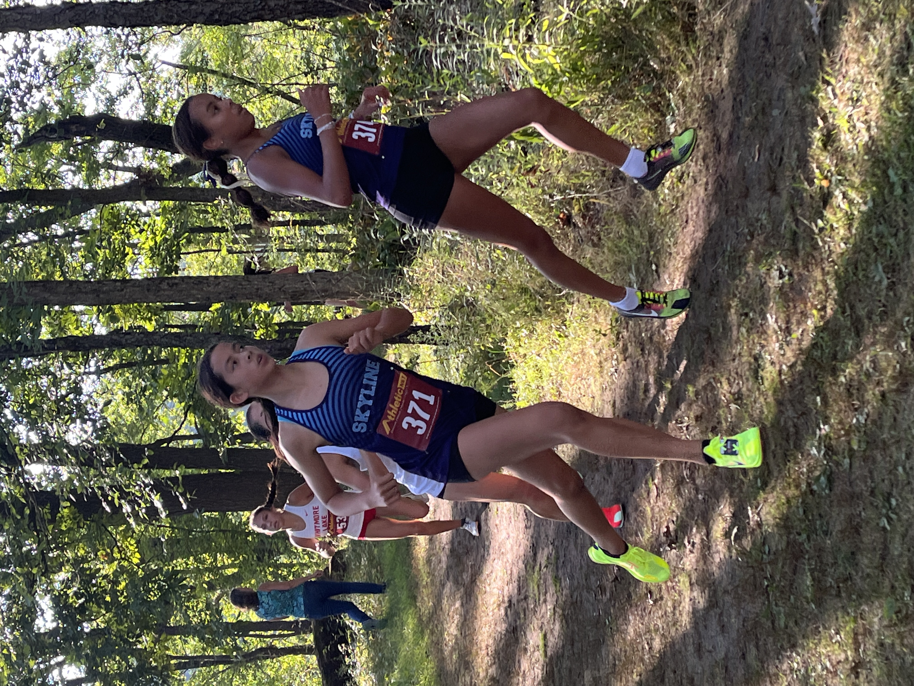
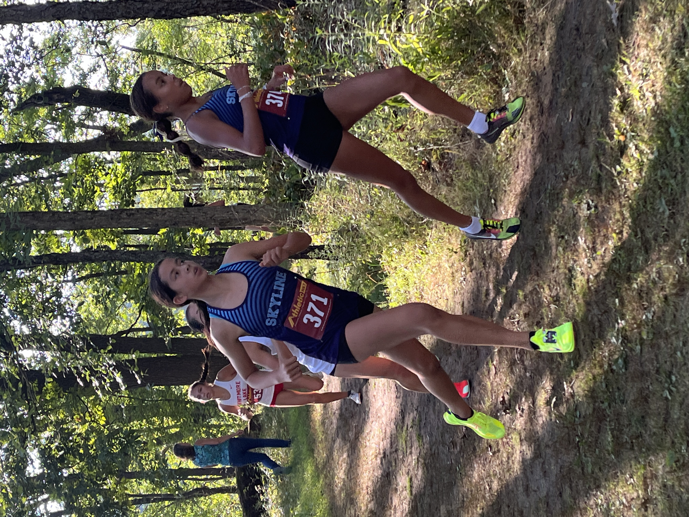

37th Early Bird Open Womens 5000 Meters HS Open 5K
Thu Aug 29 2024
Race Summary
The Skyline women's team had an outstanding performance at the 37th Early Bird Open, finishing 2nd overall with a team score of 92. Freshman Lucia Llanes led the team with a strong finish, crossing the line in 20:02.00. Notable performances include personal records (PRs) set by Deborah Song (24:22.70), Ayla Balazer (23:10.20), and Amelia Tomas (30:43.70). The team showed impressive depth with consistent finishes from Lila Edison (21:03.40), Irie Scrase (21:16.50), and Isla Tharp (21:22.30). This solid team effort helped Skyline secure a podium finish at the meet.
Team Results
| Place | Team | Score |
|---|---|---|
| 1 | Romeo | 92 |
| 2 | Ann Arbor Skyline | 109 |
| 3 | Fraser | 117 |
| 4 | Ann Arbor Huron | 143 |
| 5 | Whitmore Lake | 153 |
| 6 | Livonia Churchill | 156 |
| 7 | Grand Blanc | 166 |
| 8 | Mason | 236 |
| 9 | South Lyon East | 277 |
| 10 | Fenton | 309 |
| 11 | Christ the King | 356 |
| 12 | North Farmington | 400 |
| 13 | Waterford Kettering | 416 |
| 14 | Ypsilanti Community | 441 |
Individual Results
Lucia Llanes
Place
8
Time
20:02.00
Grade
9
Lila Edison
Place
12
Time
21:03.40
Grade
9
Irie Scrase
Place
15
Time
21:16.50
Grade
10
Isla Tharp
Place
18
Time
21:22.30
Grade
10
Ayla Balazer
Place
39
Time
23:10.20
Grade
12
Mara Mocanu
Place
40
Time
23:13.90
Grade
10
Alison Kauffman
Place
43
Time
23:20.00
Grade
10
Tia Cocciolone
Place
47
Time
23:42.10
Grade
11
Gwen Stotts-Walshe
Place
53
Time
24:07.20
Grade
10
Elin Tenbrink
Place
55
Time
24:13.00
Grade
9
Julianna Heung
Place
80
Time
25:36.50
Grade
12
Vera Naines
Place
86
Time
26:05.90
Grade
12
Alexandra Wren
Place
87
Time
26:08.20
Grade
12
Elsa Wenzlaff
Place
88
Time
26:14.50
Grade
11
Calla Sopoci
Place
92
Time
26:21.40
Grade
9
Arabella Kessler
Place
157
Time
32:58.60
Grade
11
Gallery


 
